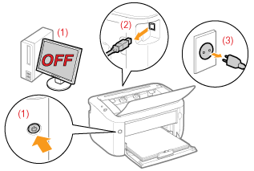

|
VAROITUS
|
|
Älä sijoita tulostinta lähelle paikkaa, jossa on alkoholeja, maalinohenteita tai muita helposti syttyviä aineita. Jos tulenarkoja aineita pääsee kosketuksiin tulostimen sisällä olevien sähköosien kanssa, seurauksena voi olla tulipalo tai sähköisku.
Älä aseta seuraavia esineitä tulostimen päälle.
Kaulakorut ja muut metalliesineet
Kupit, maljakot, kukkaruukut ja muut astiat, joissa on vettä tai muita nesteitä
Jos tällaiset esineet tai aineet joutuvat kosketuksiin tulostimen sisällä olevan suurjännitealueen kanssa, voi aiheutua tulipalo tai sähköisku.
Jos näitä esineitä tai aineita putoaa tai kaatuu tulostimeen, käännä heti virtakytkin (1) POIS päältä ja irrota liitäntäkaapelit, jos se on kytkettynä (2). Irrota sitten virtapistoke pistorasiasta (3) ja ota yhteys paikalliseen valtuutettuun Canon-myyjään.
 |
|
HUOMIO
|
|
Älä asenna tulostinta epävarmoihin paikkoihin, kuten epävakaalle alustalle tai kaltevalle lattialle, tai paikkoihin, jotka altistuvat huomattavalle tärinälle. Tulostin saattaa pudota tai kaatua, mikä voi aiheuttaa henkilövahinkoja.
Tuuletusaukot varmistavat, että tulostimen sisällä toimivilla osilla on kunnollinen ilmanvaihto. Älä koskaan aseta tulostinta vuoteelle, sohvalle, matolle tai muulle pehmeälle alustalle. Aukkojen tukkeutuminen voi aiheuttaa tulostimen ylikuumenemisen, joka voi puolestaan aiheuttaa tulipalon.
Älä sijoita tulostinta seuraaviin paikkoihin, sillä siitä voi olla seurauksena tulipalo tai sähköisku.
Kostea tai pölyinen paikka
Savulle ja höyrylle altis paikka, esimerkiksi keittiön tai ilmankostuttimen lähistö
Vesi- tai lumisateelle altis paikka
Vesihanan tai veden läheisyys
Suoralle auringonvalolle altis paikka
Korkeille lämpötiloille altis paikka
Avotulen lähellä oleva paikka
Kun asennat tulostinta, laske tulostin varovasti asennuspaikkaan ja varo, etteivät kätesi jää tulostimen ja lattian tai muiden laitteiden väliin, sillä siitä voi aiheutua vammoja.
Kytke liitäntäkaapeli oikein sähköisen oppaan ohjeiden mukaisesti. Liitäntäkaapelin kytkeminen väärin voi aiheuttaa toimintahäiriön tai sähköiskun.
Siirtäessäsi tulostinta pidä sitä oikealla tavalla sähköisen oppaan ohjeiden mukaisesti. Muuten tulostin saattaa pudota, mikä voi aiheuttaa henkilövahinkoja.
 "Tulostimen siirtäminen" "Tulostimen siirtäminen" |